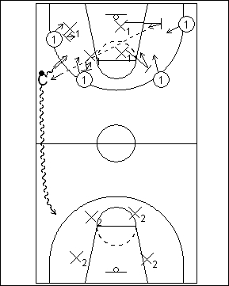

Catégorie : REBOND (Reb-07)
Déroulement
- Trois groupes de joueurs. Sur le panneau de départ, quatre attaquants (les 1) et quatre défenseurs (les X1). Au panneau opposé, quatre défenseurs (les X2).
- Le Coach possède un ballon; il dribble et prend un shoot. C’est le signal du rebond pour les huit joueurs se trouvant sur ce panneau. Si le rebond est offensif, donc gagné par les 1, on joue le quatre contre quatre à fond jusqu’au panier marqué ou interception adverse. Les premiers défenseurs (X1) remettent le ballon au Coach et seront alors attaquants sur le panier adverse, les 1 passant en défense. Si le premier rebond est défensif, donc gagné par les X1, ceux-ci donnent directement le ballon au Coach et vont également comme attaquants vers le panneau adverse.
- Le Coach dribble vers la ligne des trois points opposée et shoote à nouveau. On a cette fois les X2 prêts pour le rebond défensif et les X1 pour l’offensif. Et ainsi de suite.
Coaching points
- Insister pour que les rebonds offensifs (consignes) et défensifs (consignes) soient exécutés parfaitement de tous les emplacements du terrain (que l’on soit au départ en position deny, en pistols defense, etc …).
- Suivant le nombre de joueurs, on peut disputer cet exercice par vagues de 3 ou 5. On peut aussi jouer ce drill sous forme de concours et attribuer des points aux équipes qui gagnent les rebonds (offensifs-défensifs).